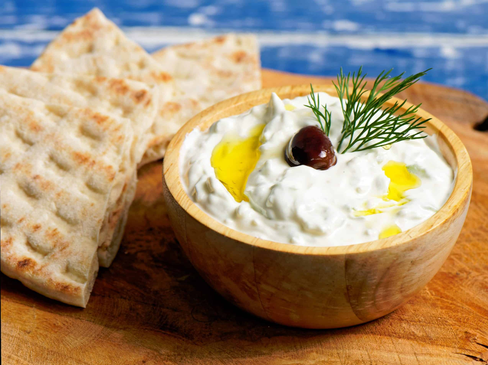

Greek Salad

Simple goes perfect with meat or accompanying a pita gyros
All you need is
- 1 cucumber
- 2 cloves of garlic minced
- 1/4 of a cup extra virgin olive oil
- 500g strained Greek yogurt
- Lots of olive oil
- A big piece of feta cheese
- Salt
Steps for the preparation
- Cucumber should be grated with no water left
- Mixed with the yoghurt
- The 2 cloves of garlic should be minced
- Put them into a bowl and mix well
- Add a generous amount of olive oil
- Secret: The more olive oil the tastier so do not be afraid to add more
- Add some salt and gently mix them